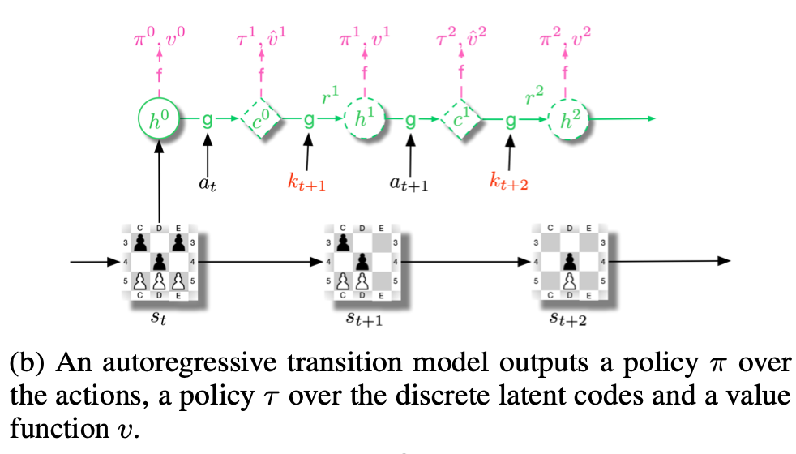
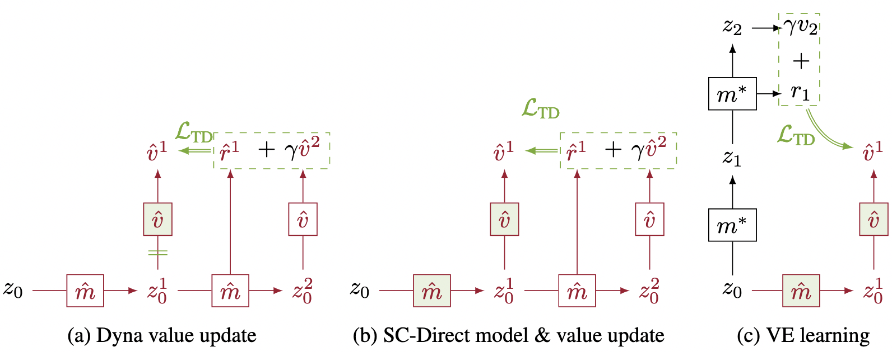

Inspired by Vitaly's research notes, here are some notes on, or inspired by, various papers. Some older, more structured essay-style writing of mine here.

Vector Quantized Models for Planning

Self-Consistent Models and Values